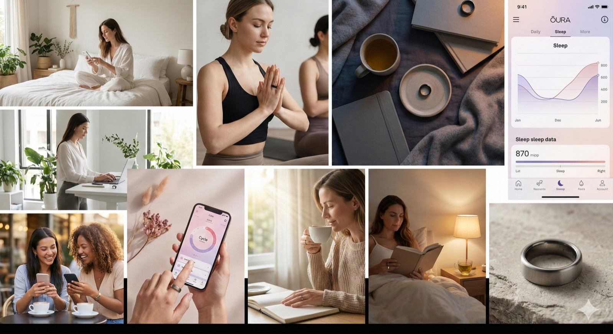

"Your body speaks. Are you listening?"
A full-funnel digital marketing campaign for the Oura Ring, repositioning a wearable from the performance "specs war" into the high-growth FemTech category — built around body literacy, cycle awareness, and authentic creator storytelling for women aged 24–35.
Apple and Whoop dominate a "masculine specs war" of steps, calories, and raw output. The strategy: stop competing on performance and own body literacy — positioning Oura as the decoder for the female body, where it can win on retention, trust, and medical credibility.
Carve a defensible FemTech niche insulated from Apple & Whoop by leading with hormonal health, recovery, and self-understanding rather than output metrics.
Becoming a daily tool for fertility and hormonal health drives Oura's high-80s retention vs. low-30s for competing wearables.
FDA-cleared partnerships (e.g., Natural Cycles) establish clinical credibility with a demographic skeptical of superficial wellness trends.
The central idea shifts the narrative from tracking performance to syncing with physiology. Instead of promoting raw output, Oura becomes a decoder that helps women align their work, lifestyle, and recovery with their natural rhythms.
Ranked decision factors from segmentation research across career-focused professionals, new mothers, and wellness seekers — each mapped to the psychological driver behind the behavior.
| Factor | Behavioral Signal | Psychological Driver | Weight |
|---|---|---|---|
| Sleep Quality & Recovery | Researches "Oura sleep accuracy" for 2–3 weeks | Chronic exhaustion seeking solutions | ★★★★★ |
| Holistic Health Data | Searches shift to "best wearable for hormones & recovery" | Rejection of calorie / step obsession | ★★★★★ |
| Cycle & Reproductive Tracking | 40% research period-prediction accuracy | Body autonomy without gatekeeping | ★★★★ |
| Discreet, Feminine Design | Pinterest boards: "Oura vs Apple Watch style" | Tech shouldn't compromise aesthetic | ★★★★ |
| Community & Social Proof | Browses Instagram #OuraRing (500K+ posts) | Validation through peer adoption | ★★★ |
Drawn in by cycle-syncing workouts and FOMO purchase triggers. Responds to fast, playful short-form and financing options.
Reads long-form reviews, leans into fertility focus and medical validation, and approaches the ring as a considered investment.
Every touchpoint mapped to channel, content focus, and timing — moving a prospect from a late-night TikTok scroll to advocacy and UGC.
Instagram, TikTok, Pinterest & podcast ads. Lifestyle content & unboxings, evenings 8–10pm.
Google, Reddit, YouTube, Well+Good. Scientific explainers & long-form reviews.
Review sites, r/ouraring, brand site. "Oura vs Whoop" guides on weekends.
Website, email retargeting, SMS. Cart recovery & financing on pay-period mornings.
Oura app, email nurture, community. Weekly insights & challenges.
Instagram UGC, referral program, TikTok. Organic transformation stories.
A cohesive visual world — soft natural light, warm neutrals, candid moments — translated into a creator-style influencer video built for short-form social.

Mood board — generated & art-directed to define the campaign's tone, lighting, and product integration.
Influencer-style social video — concepted, scripted, and produced for the 24–35 demographic.
Midnight blue #2B3A52, warm cream #F5F1E8, rose gold #E6B8A2, with sage & lavender accents.
Golden-hour light, intimate candid composition, real homes & studios. Ring visible but never the hero.
Warm serif headlines, clean readable body, precise data type — approachable yet tech-credible.
A KPI framework spanning the full funnel, paired with a budget weighted toward the channels the data showed mattered most.
Weighted toward paid social & influencer — the highest-leverage channel for this demographic.
The campaign was researched, written, designed, and produced using a modern, multi-tool AI stack — managing prompt engineering and reproducibility across platforms to ship polished creative quickly.
Data showed influencer-led social was the highest-leverage channel.
A four-tier creator program built on authenticity markers — the "unglamorous data," the honest rest day — rather than polished perfection. Backed by a copyright-safe, inclusive messaging framework.
Wellness Influencers
50K–500K followers. A 90-day wellness journey with Oura integration.
Shares unglamorous dataFemTech Advocates
40K–200K followers. Cycle-tracking comparison deep-dives.
Medical credibilityFitness Creators
30K–300K followers. A 30-day cycle-synced training program.
Shows rest daysWorking Mothers
60K–400K followers. Postpartum recovery journeys.
Honest vulnerabilitySample social copy that converts
Built in the brand's voice — supportive, never preachy — for each stage of the funnel.
"Three things my Oura Ring taught me about my cycle that changed everything 🌙 (Spoiler: I wasn't lazy during week 3 — my body was literally preparing for my period.) Which insight resonates with you? 👇"
"POV: You think you gotta go hard or go home… but your Oura Ring is like… 'Girl, sit down.' Old me: pushed through anyway. New me: honors what my body needs. Next-day readiness 84 — and somehow the world didn't end ✨"
Strategic partnerships
Co-marketing that meets the audience where trust already lives.